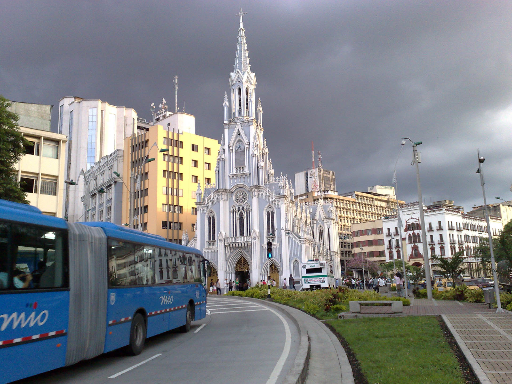

Cali, oficialment Santiago de Cali, és un municipi colombià, capital del departament del Valle del Cauca i la tercera ciutat més poblada de Colòmbia. Està situada a la regió Sud de la Vall del Cauca, entre la serralada occidental i la serralada central dels Andes. La ciutat forma part de l'Àrea Metropolitana de Cali, juntament amb els municipis limítrofs a aquesta. Va ser fundada el 25 de juliol de 1536 per Sebastián de Belalcázar, el que la converteix en una de les ciutats més antigues d'Amèrica.
La ciutat és un dels principals centres econòmics i industrials de Colòmbia, a més de ser el principal centre urbà, cultural, econòmic, industrial i agrari del suroccidente del país i el tercer a nivell nacional. Com a capital departamental, alberga les seus de la Governació del Valle del Cauca, l'Assemblea Departamental, el Tribunal Departamental, la Fiscalia General, Institucions i Organismes de l'Estat, també és la seu d'empreses oficials com la municipal EMCALI.
És un dels principals centres esportius de Colòmbia, destacant-se la organització d'importants esdeveniments esportius com els Jocs Panamericans de 1971 i els Jocs Mundials de 2013. És al seu torn coneguda com «la capital mundial de la salsa.
